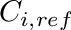
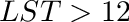
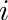
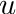
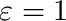
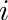
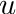
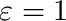
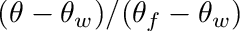
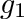

|
. v1.3.6
|
Loading...
Searching...
No Matches
|
. v1.3.6
|
| Dependencies | None. |
|---|---|
| CMakeLists.txt | set( PLUGINS "solarposition" ) |
| Header File | #include "SolarPosition.h" |
| Class | SolarPosition |
This plugin calculates the position of the sun, and also implements other models for solar fluxes as well as longwave fluxes from the sky. Model theory and equations are given in the sections below.
| Constructors |
|---|
| SolarPosition( helios::Context* context) |
| SolarPosition( int UTC, float latitude, float longitude, helios::Context* context) |
The SolarPosition class can be initialized by simply passing a pointer to the Helios context as an argument to the constructor. This gives the class the model access to the time and date currently set in the Context. The model must also know certain parameters about the simulated location, in particular the offset from UTC time, latitude, and longitude. A description of these parameters are given in the table below. These can be supplied using the second constructor listed in the table above. If the Context is the only argument supplied to the constructor, default values are assumed for UTC, latitude, and longitude (see table below).
| Input Parameter | Description | Convention | Default Behavior |
|---|---|---|---|
| UTC | Difference in hours between Coordinated Universal Time (UTC) for a particular location. See the figure below to determine a particular UTC offset. | UTC offset value is positive moving West. | +8:00 |
| latitude | Geographic coordinate that specifies the north–south position of a point on the Earth's surface in degrees. | Latitude is positive in the northern hemisphere. | +38.55 |
| longitude | Geographic coordinate that specifies the east-west position of a point on the Earth's surface in degrees. | Longitude is positive in the western hemisphere. | +121.76 |
The solar position model was implemented following the description in Chapter 1 of Iqbal (1983).
The day angle  given as the polar angle of the earth relative to the sun ( on Jan. 1) is calculated as
where DOY is the Julian Day of the year.
The solar declination angle is then calculated as
The equation of time is calculated as
The hour angle is given by
with
and
Finally, the solar elevation angle is given by
and the solar azimuthal angle is given by
Note that  gives angles between 0 and  , so to get a  between 0 and , we take  if .
, so to get a  between 0 and , we take  if .
Clear-sky solar fluxes are calculated using the 'REST-2' model of Gueymard (2008). REST-2 is a state-of-the-art atmospheric transmission model that calculates the solar flux at Earth's surface after attenuation by water vapor, CO2, Ozone, NO2, and aerosols. The model partitions the total radiative flux into direct and diffuse components.
The longwave radiation flux emanating from the clear-sky is modeled following Prata (1996).
The model surmounts to calculating the effective emissivity of the sky as a function of precipitable water in the atmosphere
where  is the wator vapor path length (cm of precipitable water) which can be estimated following Viswanadham (1981) for example.
The downwelling longwave radiation flux on a horizontal surface is given by
where  W/m2-K4, and  is the air temperature in Kelvin measured near the ground (say 2 m height).
is the air temperature in Kelvin measured near the ground (say 2 m height).
The direction of the sun can be queried in one of several ways: a Cartesian unit vector pointing in the direction of the sun, a spherical coordinate describing the direction of the sun, the elevation angle of the sun, the zenithal angle of the sun, and the azimuthal angle of the sun. The functions to query these quantities are given in the table below. Each of these functions calculates the solar direction based on the current time and date set in the Context (see setTime() and setDate()), and the UTC, latitude, and longitude specified in the \SolarPosition constructor.
| Direction Quantity | Function |
|---|---|
| Unit vector pointing toward the sun. | SolarPosition::getSunDirectionVector() |
| Spherical coordinate vector pointing toward the sun. | SolarPosition::getSunDirectionSpherical() |
| Elevation angle of the sun (radians). | SolarPosition::getSunElevation() |
| Zenithal angle of the sun (radians). | SolarPosition::getSunZenith() |
| Azimuthal angle of the sun (radians). | SolarPosition::getSunAzimuth() |
Below is an example of how to use the \SolarPosition mode to calculate the sun angle.
#include "Context.h"
#include "SolarPosition"
int main( void ){
Context context; //declare the context
The solar flux can be calculated using the REST-2 model using the SolarPosition::getSolarFlux() function. IT IS CRITICAL TO NOTE THAT THE CALCULATED FLUX IS FOR A SURFACE PERPENDICULAR TO THE SUN DIRECTION. To get the flux on a horizontal surface, multiply by the cosine of the solar zenith angle.
The getSolarFlux() function takes several arguments needed for the model, which are listed in the table below.
| Argument | Description | Example Value |
|---|---|---|
| pressure | Atmospheric pressure in Pascals (near the ground). | 101,000 Pa |
| temperature | Air temperature in Kelvin (near the ground). | 300 K |
| humidity | Air relative humidity (near the ground). | 0.6 |
| turbidity | Angstrom's aerosol turbidity coefficient. | 0.05 |
The very similar function SolarPosition::getDiffuseFraction() calculates the fraciton of the total flux that is diffuse. The fraction that is direct is simply one minus the diffuse fraction. This function takes the same arguments as getSolarFlux().
Example code for using these solar flux functions is given below.
#include "Context.h"
#include "SolarPosition"
int main( void ){
Context context; //declare the context
The downwelling longwave radiation flux from the sky can be calculated using the SolarPosition::getAmbientLongwaveFlux() function. This function takes the air temperature and humidity as arguments, which are defined in the same was as for the getSolarFlux() function described above. The value returned by the function is the clear-sky downwelling longwave radiation flux on a horizontal surface in W/m2.